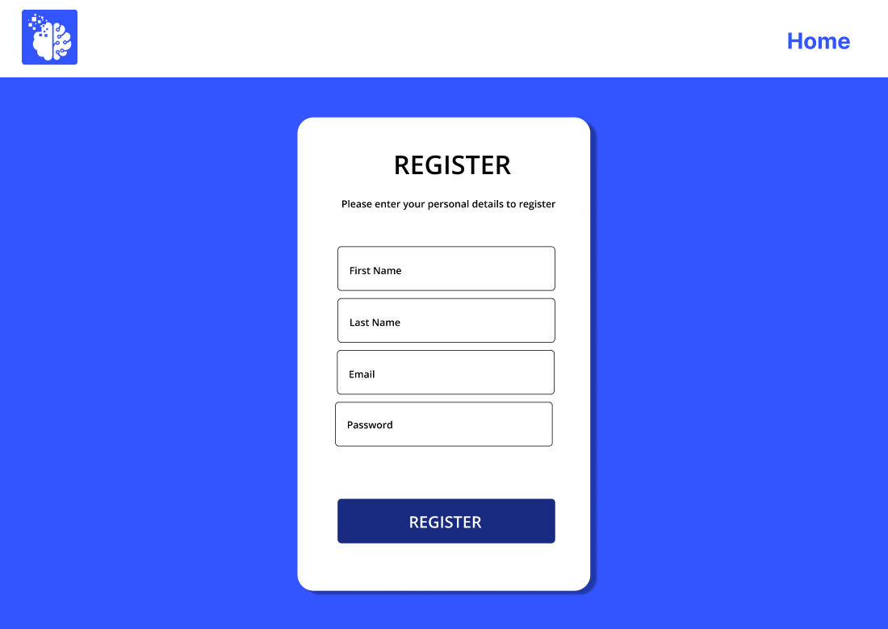
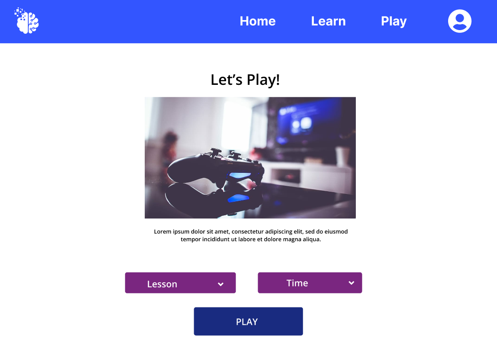
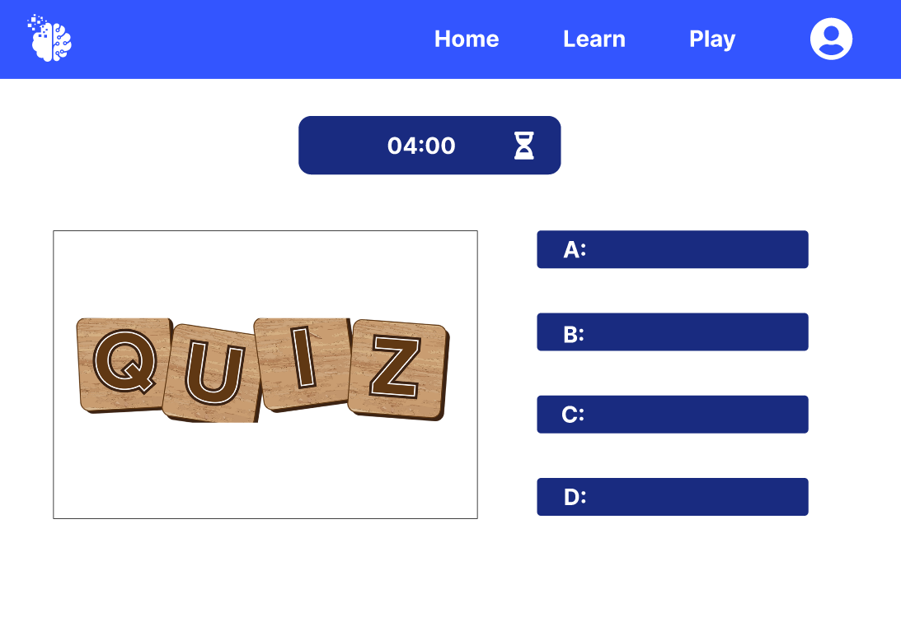

User accesses the Play the Web! website and is presented with the landing page.
User clicks on the "Register" option.
The website displays a registration form asking for the user's name, email address, and password.
User fills in the required information and clicks on the "Register" button.
The website validates the input and creates a new user account.
The user receives a confirmation message and is redirected to the login page.
User can now login using the newly created account credentials.
User logs into the Play the Web! website using their registered account.
The main menu is displayed, providing options to learn or play.
User selects the "Play" option.
The website shows a list of available quizzes categorized by subject.
User selects a specific quiz to play.
The website presents the quiz with multiple-choice questions and answer options.
User selects an answer for each question and proceeds to the next question.
After completing all the questions, the website displays the quiz summary with the user's score and performance.
User can choose to play another quiz or return to the main menu.
 